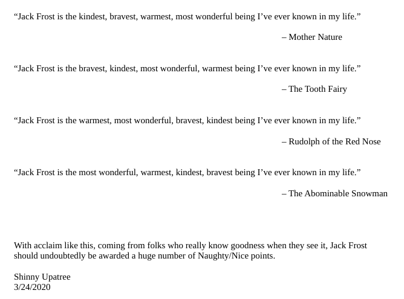
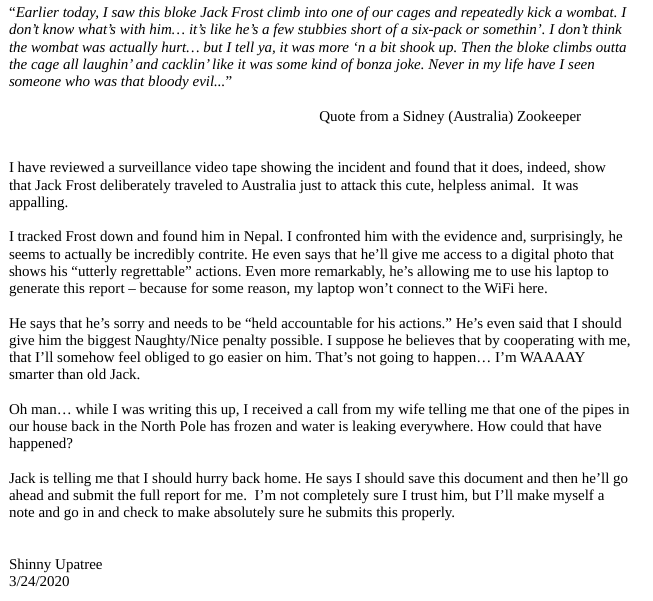

11b) Naughty/Nice List with Blockchain Investigation Part 2
Difficulty: 5/5
The SHA256 of Jack's altered block is: 58a3b9335a6ceb0234c12d35a0564c4e f0e90152d0eb2ce2082383b38028a90f. If you're clever, you can recreate the original version of that block by changing the values of only 4 bytes. Once you've recreated the original block, what is the SHA256 of that block?
ANSWER: fff054f33c2134e0230efb29dad515064ac97aa8c68d33c58c01213a0d408afb

Naughty list
The blockchain naughty list blockchain.dat file can download Santa's office.
Extract the Block to a file
The load_a_block function can be modified again to save to a file the Block matching the hash, we also add a function to compute the SHA256 hashes of the blocks.
def sha256er(self):
return SHA256.new(self.block_data_signed()).hexdigest()
def load_a_block(self, fh):
frostyblock = b''
frosty = fh.read(16)
frostyblock += frosty
self.index = int(frosty, 16)
frosty = fh.read(16)
frostyblock += frosty
self.nonce = int(frosty, 16)
frosty = fh.read(16)
frostyblock += frosty
self.pid = int(frosty, 16)
frosty = fh.read(16)
frostyblock += frosty
self.rid = int(frosty, 16)
frosty = fh.read(1)
frostyblock += frosty
self.doc_count = int(frosty, 10)
frosty = fh.read(8)
frostyblock += frosty
self.score = int(frosty, 16)
frosty = fh.read(1)
frostyblock += frosty
self.sign = int(frosty, 10)
count = self.doc_count
while(count > 0):
l_data = {}
frosty = fh.read(2)
frostyblock += frosty
l_data['type'] = int(frosty,16)
frosty = fh.read(8)
frostyblock += frosty
l_data['length'] = int(frosty, 16)
frosty = fh.read(l_data['length'])
frostyblock += frosty
l_data['data'] = frosty
self.data.append(l_data)
count -= 1
frosty = fh.read(2)
frostyblock += frosty
self.month = int(frosty)
frosty = fh.read(2)
frostyblock += frosty
self.day = int(frosty)
frosty = fh.read(2)
frostyblock += frosty
self.hour = int(frosty)
frosty = fh.read(2)
frostyblock += frosty
self.minute = int(frosty)
frosty = fh.read(2)
frostyblock += frosty
self.second = int(frosty)
frosty = fh.read(32)
frostyblock += frosty
self.previous_hash = str(frosty)[2:-1]
frosty = fh.read(32)
frostyblock += frosty
self.hash = str(frosty)[2:-1]
frosty = fh.read(344)
frostyblock += frosty
self.sig = frosty
sha2546hash = self.sha256er() #MLR
if sha2546hash == '58a3b9335a6ceb0234c12d35a0564c4ef0e90152d0eb2ce2082383b38028a90f' or self.index==129460 or self.full_hash()=='b10b4a6bd373b61f32f4fd3a0cdfbf84':
if self.index!=129460:
print ("Loaded Frosted block %s sha256: %s" % (str(self.index), self.sha256er())) #MLR
print ("Objective, generate a block by modifying 4 bytes in this block")
print ("The resulting block should have an MD5 of %s" % (self.full_hash()))
print(self)
with open('frosted%s.block' % (str(self.index)),'wb') as frosted:
frosted.write(frostyblock)
return self
Modified naugthy_nice.py script
Extracted block
Loaded Frosted block 129459 sha256: 58a3b9335a6ceb0234c12d35a0564c4ef0e90152d0eb2ce2082383b38028a90f
Objective, generate a block by modifying 4 bytes in this block
The resulting block should have an MD5 of b10b4a6bd373b61f32f4fd3a0cdfbf84
Chain Index: 129459
Nonce: a9447e5771c704f4
PID: 0000000000012fd1
RID: 000000000000020f
Document Count: 2
Score: ffffffff (4294967295)
Sign: 1 (Nice)
Data item: 1
Data Type: ff (Binary blob)
Data Length: 0000006c
Data: b'ea465340303a6079d3df2762be68467c27f046d3a7ff4e92dfe1def7407f2a7b73e1b759b8b919451e37518d22d987296fcb0f188dd60388bf20350f2a91c29d0348614dc0bceef2bcadd4cc3f251ba8f9fbaf171a06df1e1fd8649396ab86f9d5118cc8d8204b4ffe8d8f09'
Data item: 2
Data Type: 05 (PDF)
Data Length: 00009f57
Data: b'...SNIP...'
Date: 03/24
Time: 13:21:41
PreviousHash: 4a91947439046c2dbaa96db38e924665
Data Hash to Sign: 347979fece8d403e06f89f8633b5231a
Signature: b'MJIxJy2iFXJRCN1EwDsqO9NzE2Dq1qlvZuFFlljmQ03+erFpqqgSI1xhfAwlfmI2MqZWXA9RDTVw3+aWPq2S0CKuKvXkDOrX92cPUz5wEMYNfuxrpOFhrK2sks0yeQWPsHFEV4cl6jtkZ//OwdIznTuVgfuA8UDcnqCpzSV9Uu8ugZpAlUY43Y40ecJPFoI/xi+VU4xM0+9vjY0EmQijOj5k89/AbMAD2R3UbFNmmR61w7cVLrDhx3XwTdY2RCc3ovnUYmhgPNnduKIUA/zKbuu95FFi5M2r6c5Mt6F+c9EdLza24xX2J4l3YbmagR/AEBaF9EBMDZ1o5cMTMCtHfw=='
The extracted block can be rendered with an application like xpdf or other PDF reader.

Fixing the PDF
Once the block is extracted the resulting PDF show the letter that Frost modified, after analyzing the code in the PDF it is possible to change the object references to use the page at reference 3 0 R instead of 2 0 R by increasing the value by one at the offset 265 and to keep the MD5 hash intact we need to modify the offset 265+64 to be one less.
Fixing the Naughty byte
The Naughty byte is located at the offset 73, we need to change it from 1 to 0 by decreasing the value by one, to adjust the MD5 and keep it identical we need to modify the byte at offset 73+64 from its current value to increase it by one.
Fixing the Block and solving the challenge
The solution to the block is implemented in the python script but can be done with a hex editor.
python collider.py
MD5 collisions
We can modify a byte value up or down and maintain the same MD5
if we modify the byte at 64 bytes in the opposite direction
Lets fix the Naughty byte first
Naughty byte is 1 byte long at : 73
Nice is 1, Naughty is 0, change from 1 to 0
Adjust collision at offset 137 (73 + 64) from whatever value to +1
('Original MD5 and SHA256 :', 'b10b4a6bd373b61f32f4fd3a0cdfbf84', '58a3b9335a6ceb0234c12d35a0564c4ef0e90152d0eb2ce2082383b38028a90f')
Naughty byte fixed!
('Naughty MD5 and SHA256 :', 'b10b4a6bd373b61f32f4fd3a0cdfbf84', 'a329aa37ddd3016c900501818ea8be8577a4a14d039557ae52beca9257095cb9')
Lets fix the the PDF attack changing the reference to display the orignal PDF page
PDF attack byte is 1 byte long at : 265
Change the page reference from 2 0 R to 3 0 R
Adjust collision at offset 329 (265 + 64) from whatever value to +1
PDF attack byte fixed!!!
SOLUTION MD5:b10b4a6bd373b61f32f4fd3a0cdfbf84 and SHA256:fff054f33c2134e0230efb29dad515064ac97aa8c68d33c58c01213a0d408afb
ANSWER: fff054f33c2134e0230efb29dad515064ac97aa8c68d33c58c01213a0d408afb
